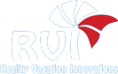
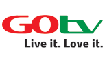
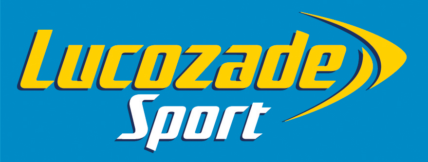

Dovan Work and Clientelle portfolio
Dovan Consult as a professional Institution has facilitated a number of projects in respect to:
with and For a high number of other corporate institutions. Click to view the Underlisted projects:

X
How do we create an exciting and ever fresh contents for the RVI monthly cocktails
How do we increase the turn out at the events
Developed a themed concept for each cocktail.
Created an interactive entertainment based games/competition for guests.
Well attended event
Exciting events with rich contents that members can’t resist.
Reality Vacation Innovation
Challenges
Solution
Results

X
How to create entertaining activation in 2 key cities to create awareness and drive sales
Create pre-awareness for product launch
Set up a team comprising of brand ambassadors, dancers, skaters, music and adrive rthrough bus
Located activation points with fully branded gazebos and demo units for presentation and sales
Created massive awareness
Data capured over 50,000 prospects over a month in both Enugu and Benin
huge successes in attendance for both product launches in Enugu and Benin
Go TV
Challenges
Solution
Results
X
A customer acquisition drive targeted at students
Acquire 100,000 new customers and activate their SIMs
Roadshow at all institution in selected states
Set up a an activation points driven by a talent hunt campaign
Sims were immediately activated by KYC
Created massive awareness
Achieved 50percent as schools were closing for the year
Client approved an extension of the project
Airtel Padi 10
Brief
Solution
Results

X
How do we create awareness for this brand?
How do we stimulate trial and create a new channel for sales drive?
A sampling activation in key gyms and sport centres across Lagos
Created sufficient awareness amongst target audience
A staggering 2,300 contacts were data captured
Lucozade Sport
Challenges
Solution
Results
X
How do we create a platform that will offer a memorable and positive experience for Smirnoff Ice consumers in a party environment.
To offer Smirnoff Ice as a better choice than beer in a party environment.
To use the experience to recruit & reward consumers for the brand.
The Smirnoff Ice Club Blast, an exclusive club party
Recruit target consumers for the Party through bar storming
Guest were handed a Smirnoff Ice wrist band as invite at pubs, bars, clubs & social clubs, weeks before the event
Ice Party will hold in an inspirational venue.
Lots of dancing all night long
Celebrity presence
Over 1500 guests experienced the Smirnoff Ice club party in each of the 8 cities visited in 2008
Over 12,000 guests were sampled during the project
Smirnoff Ice/Sound City Blast
Challenges
Solution
Results